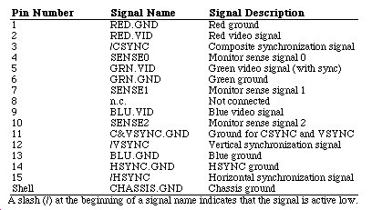
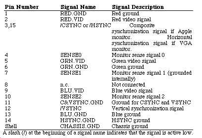
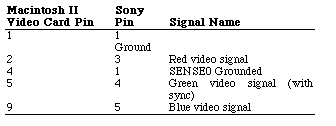
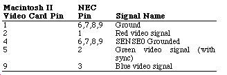
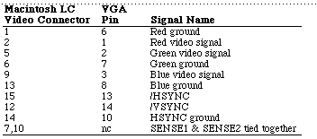

|
|
This Technical Note describes how to connect the Macintosh
II Video Card, Macintosh IIci built-in video, and Macintosh
LC video to third-party monitors.
[Feb 01 1991]
|
Pinout descriptions
Table 1 documents the pinout descriptions of the Macintosh
II Video Cards and the Macintosh IIci built-in video:

Table 1 - Macintosh II Video Card and Macintosh IIci
Built-in Video
|
Note:
The Macintosh II High-Resolution Display
Video Card is the newer replacement for the original four-
and eight-bit Macintosh II Video Card (M0211 and M5640).
This new card is sold in four- and eight-bit configurations
(M0322 and M0324, respectively). The external video
connector on the early version of the Macintosh II Video
Card did not have the signals SENSE0, SENSE1, and
SENSE2.
|
|
Note:
The newer Macintosh II Video Cards and
Macintosh IIci built-in video require that pin 4 (SENSE0) be
connected to Ground to signal the connection of a 640 x 480
monitor. Do not connect pins 7 or 10 as they are unused on
original Macintosh II Video Cards and there are built-in
pullup resistors on the newer Macintosh II Video Card and
Macintosh IIci to terminate these pins when not in use.
|
Table 2 documents the pinout descriptions of the
Macintosh LC video connector:

Table 2 - Macintosh LC External Video Connector
|
Note:
The Macintosh LC does not supply vertical
synchronization with the Green video signal (pin 5).
The vertical synchronization signal is supplied on pin 12.
Note: The Macintosh LC requires that pin 4 (SENSE0)
be connected to Ground to signal the connection of a 640 x
480 monitor. The Macintosh LC requires that pin 4 and 10
(SENSE0 and SENSE2) be connected to Ground to signal the
connection of a 512 x 384 monitor (i.e., the Macintosh 12"
RGB Display). The Macintosh LC requires that pin 10 (SENSE2)
be connected to Ground to signal the connection of a VGA
monitor. Pin 7 (SENSE1) is grounded in the Macintosh LC.
|
Back to top
Macintosh II to Sony Multiscan (CPD-1302)
To connect a Macintosh II to a Sony Multiscan monitor,
you need to make an adapter cable from the video card to the
monitor (which has a 9-pin D-type connector). Following is
the pinout description for the adapter cable (using the
automatic sync-on-green configuration):

Back to top
Macintosh II to NEC MultiSync (JC-140IP3A)
To connect a Macintosh II to a NEC MultiSync monitor, you
need to make an adapter cable from the video card to the
monitor (which has a 9-pin D-type connector). Following is
the pinout description for the adapter cable (using the
automatic sync-on-green configuration):

The monitor must be set to Analog mode and Manual mode.
This adaptor cable also works with an equivalent monitor
such as the Taxan Super Vision 770.
Back to top
Macintosh LC to VGA
The Macintosh LC can supply a 640 x 480, VGA timed signal
for use with VGA monitors by using an adapter cable. The
standard Macintosh LC supports VGA to 16 colors, and with
the optional 512K VRAM SIMM, the VGA monitor is supported to
256 colors.
|
Note:
The Macintosh LC supplies signals capable of
driving TTL level inputs. However, some low impedance input
VGA monitors do not work with the Macintosh LC.
|
To connect a Macintosh LC to a VGA monitor, you need to
make an adapter cable from the Macintosh LC video connector
to the VGA monitor. Following is the pinout description for
the adapter cable:

VGA monitors are identified by shorting pin 7 to pin 10
on the Macintosh LC video connector. The Macintosh LC
grounds pin 7 on its video connector, which results in
pulling down pin 10 and gives the correct monitor ID for a
VGA monitor.
Back to top
References
Guide to the Macintosh Family Hardware, Second
Edition
d e v e l o p, "Macintosh Display Card 8*24 GC: The
Naked Truth," July 1990
Back to top
Downloadables
|

|
Acrobat version of this Note (320K)
|
Download
|
Back to top
|